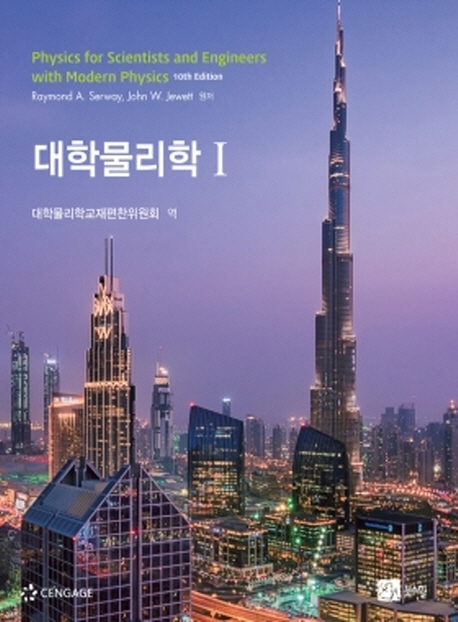

일반물리학 추천도서

목 차
I권
- 역학
- 진동과 역학적 파동
- 열역학
II권
- 전기와 자기
- 빛과 광학
- 현대물리학
본 저서를 추천하는 이유: 본 물리학 책은 두 권으로 분리할 수 있고, 그 두 권중에서 I권은
역학(고전역학, 뉴턴역학), 파동, 열역학으로, II권은 전자기학, 광학, 현대물리학으로 구성
되어있다. 전체적으로 다양한 예제 문제들이 있어서 물리학의 기본기를 충분히 학습할 수 있
다고 기대되고, 현대물리학 단원도 있어서 현대물리학이 어떤 학문인지 맛볼 수 있는 기회가
있다.